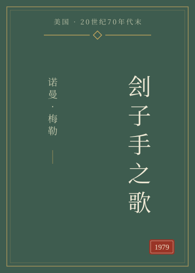

刽子手之歌
一、基本信息
| 作者 | 诺曼·梅勒 |
|---|---|
| 成书/出版 | 1979年（Britannica B409：The Executioner's Song (1979)——'Pulitzer Prize-winning novel based on the life of convicted murderer Gary Gilmore'） Norman Mailer — Encyclopaedia Britannica（百科全书） |
| 国别/地区 | 美国 |
| 时代 | 现当代 · 20世纪70年代末 |
| 体裁 | 非虚构小说 |
| 语言 | 英语 |
《刽子手之歌》行刑结构图（主题·结构图）
二、创作背景
Britannica（B409）：'Pulitzer Prize-winning novel based on the life of convicted murderer Gary Gilmore'（基于杀人犯加里·吉尔摩生平的普利策奖小说）。
Britannica（B409）：'New Journalism'——'combines the imaginative subjectivity of literature with the more objective qualities of journalism'。
题材（通说待核）：吉尔摩要求的死刑执行——'行刑者之歌'的西部叙事。
三、内容脉络
（通说待核）吉尔摩出狱、杀人、自请死刑——'西部的声音'。
（通说待核）执行前夜的媒体与宗教。
四、主要人物表
| 人物 | 身份 | 说明 |
|---|---|---|
| 加里·吉尔摩 | 死刑犯 | （B409：convicted murderer Gary Gilmore） |
| 妮可 | 恋人 | （通说待核） |
五、主题与艺术特点
- '行刑者之歌'：死刑的仪式（书名语境——通说待核）。
- '新新闻主义'的实录（B409）。
- 西部与暴力的神话（通说待核）。
六、影响与评论
- Britannica：'Pulitzer Prize-winning'（B409）。
Norman Mailer — Encyclopaedia Britannica（百科全书） - Britannica：'New Journalism'（B409 作者级）。
Norman Mailer — Encyclopaedia Britannica（百科全书）
七、阅读建议
难点
- '非虚构小说'的实录性。
- 1976-77年犹他州死刑案（通说待核）。
- 《刽子手之歌》中译本（人民文学等——通说待核）。
- 英文原版。
梅勒非虚构篇；与《裸者与死者》对读。
八、待核实
- 吉尔摩案细节核对（1976年杀人/1977年1月行刑说——通说）。
- 1979年出版（Little, Brown说）待核。
- '西部之声'结构待核。
本页主要来源
相关作品：裸者与死者丧失名誉的卡塔琳娜·布鲁姆